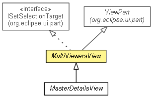

org.eclipse.net4j.util.ui.views
Class MultiViewersView
java.lang.Object
 org.eclipse.core.commands.common.EventManager
org.eclipse.ui.part.WorkbenchPart
org.eclipse.ui.part.ViewPart
org.eclipse.net4j.util.ui.views.MultiViewersView
org.eclipse.core.commands.common.EventManager
org.eclipse.ui.part.WorkbenchPart
org.eclipse.ui.part.ViewPart
org.eclipse.net4j.util.ui.views.MultiViewersView
- All Implemented Interfaces:
- org.eclipse.core.runtime.IAdaptable, org.eclipse.core.runtime.IExecutableExtension, org.eclipse.ui.IPersistable, org.eclipse.ui.IViewPart, org.eclipse.ui.IWorkbenchPart, org.eclipse.ui.IWorkbenchPart2, org.eclipse.ui.IWorkbenchPart3, org.eclipse.ui.part.ISetSelectionTarget, org.eclipse.ui.part.IWorkbenchPartOrientation
- Direct Known Subclasses:
- MasterDetailsView
- public abstract class MultiViewersView
- extends org.eclipse.ui.part.ViewPart
- implements org.eclipse.ui.part.ISetSelectionTarget

- Since:
- 2.0
| Fields inherited from interface org.eclipse.ui.IWorkbenchPart |
PROP_TITLE |
| Methods inherited from class org.eclipse.ui.part.ViewPart |
checkSite, getViewSite, init, init, saveState, setContentDescription, setInitializationData, setPartName |
| Methods inherited from class org.eclipse.ui.part.WorkbenchPart |
addPartPropertyListener, addPropertyListener, dispose, firePartPropertyChanged, firePropertyChange, getAdapter, getConfigurationElement, getContentDescription, getDefaultImage, getOrientation, getPartName, getPartProperties, getPartProperty, getSite, getTitle, getTitleImage, getTitleToolTip, removePartPropertyListener, removePropertyListener, setPartProperty, setSite, setTitle, setTitleImage, setTitleToolTip, showBusy |
| Methods inherited from class org.eclipse.core.commands.common.EventManager |
addListenerObject, clearListeners, getListeners, isListenerAttached, removeListenerObject |
| Methods inherited from class java.lang.Object |
clone, equals, finalize, getClass, hashCode, notify, notifyAll, toString, wait, wait, wait |
| Methods inherited from interface org.eclipse.ui.IWorkbenchPart |
addPropertyListener, dispose, getSite, getTitle, getTitleImage, getTitleToolTip, removePropertyListener |
| Methods inherited from interface org.eclipse.core.runtime.IAdaptable |
getAdapter |
MultiViewersView
public MultiViewersView()
getShell
public org.eclipse.swt.widgets.Shell getShell()
getCurrentViewer
public org.eclipse.jface.viewers.StructuredViewer getCurrentViewer()
setCurrentViewer
public void setCurrentViewer(org.eclipse.jface.viewers.StructuredViewer viewer)
setFocus
public void setFocus()
- Specified by:
setFocus in interface org.eclipse.ui.IWorkbenchPart- Specified by:
setFocus in class org.eclipse.ui.part.WorkbenchPart
refreshViewer
public void refreshViewer(boolean updateLabels)
refreshElement
public void refreshElement(Object element,
boolean updateLabels)
updateLabels
public void updateLabels(Object element)
revealElement
public void revealElement(Object element)
selectReveal
public void selectReveal(org.eclipse.jface.viewers.ISelection selection)
- Specified by:
selectReveal in interface org.eclipse.ui.part.ISetSelectionTarget
closeView
public void closeView()
createPartControl
public final void createPartControl(org.eclipse.swt.widgets.Composite parent)
- Specified by:
createPartControl in interface org.eclipse.ui.IWorkbenchPart- Specified by:
createPartControl in class org.eclipse.ui.part.WorkbenchPart
createUI
protected abstract org.eclipse.swt.widgets.Control createUI(org.eclipse.swt.widgets.Composite parent)
doubleClicked
protected void doubleClicked(Object object)
fillContextMenu
protected void fillContextMenu(org.eclipse.jface.action.IMenuManager manager,
org.eclipse.jface.viewers.StructuredViewer viewer,
org.eclipse.jface.viewers.IStructuredSelection selection)
fillLocalPullDown
protected void fillLocalPullDown(org.eclipse.jface.action.IMenuManager manager)
fillLocalToolBar
protected void fillLocalToolBar(org.eclipse.jface.action.IToolBarManager manager)
showMessage
protected final void showMessage(String message)
showMessage
protected final boolean showMessage(MultiViewersView.MessageType type,
String message)
getDisplay
protected final org.eclipse.swt.widgets.Display getDisplay()
Copyright (c) 2004 - 2012 Eike Stepper (Berlin, Germany) and others.